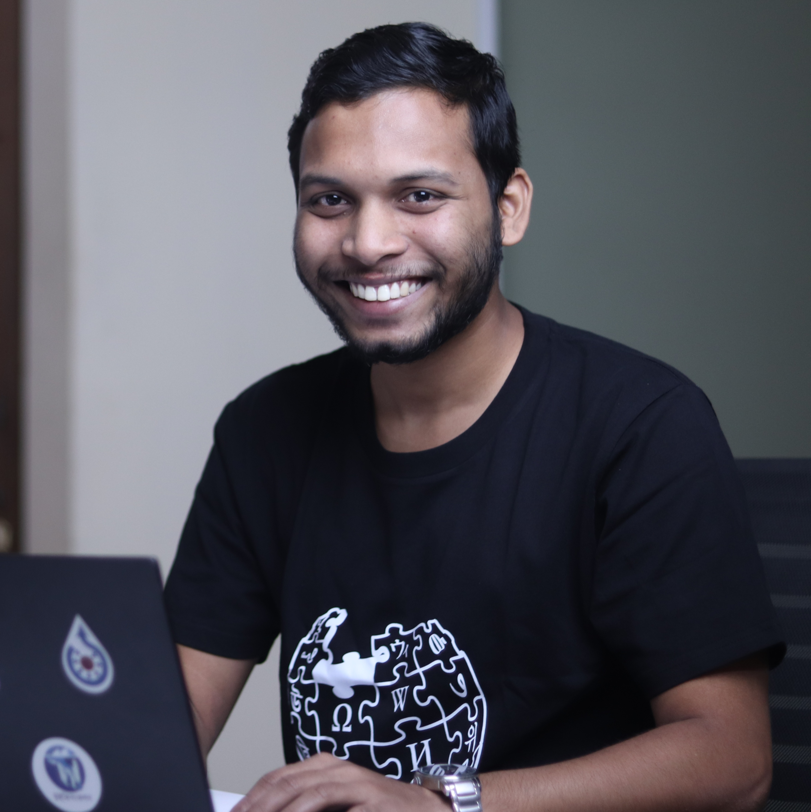

Hi, I'm Md. Tahmid Hossain
I am a Bachelor of Business Administration (BBA) student in the Department of Finance at the University of Rajshahi. Alongside my academic focus, I am a highly active contributor, community coordinator, and open preservation advocate within the global Wikimedia movement.

Md. Tahmid Hossain
About Me
Currently pursuing a Bachelor of Business Administration (BBA) at the Department of Finance, University of Rajshahi, my academic life centers on mastering financial analytics, business strategies, and investment models. This education grounds me in analytical and logical frameworks that help interpret complex industrial and financial environments, laying a robust analytical foundation for both corporate endeavors and structural knowledge work.
Beyond my studies, I am deeply devoted to collaborative open-source wisdom and digital archive curation. Since 2017, I have been actively contributing to global Wikimedia projects, editing, documenting, and archiving crucial cultural and educational narratives. My devotion to free knowledge guides me to actively coordinate outreach programs, initiate open-source collaborations, and inspire a rising generation of volunteers to join and enrich the global knowledge commons.
Education
Bachelor of Business Administration (BBA) in Finance
Department of Finance, University of Rajshahi
My current academic pursuit is focused on corporate finance, investment planning, and econometric modeling. Through this rigorous BBA program, I analyze asset pricing, study market structures, and apply corporate valuation tools to understand real-world business dynamics. The academic atmosphere at Rajshahi University sharpens my structural analysis and strategic planning skills.
Higher Secondary Certificate (HSC) in Science
Shah Makhdum College, Rajshahi
Result: GPA 5.00 out of 5.00
Completed my higher secondary education in the Science group at Shah Makhdum College in Rajshahi, graduating with a perfect grade point average. This scientific and analytical background nurtured my mathematical foundational skills and critical scientific curiosity, preparing me well for the structured quantitative challenges encountered in my business degree.
Wikipedia & Open Source Roles
Since 2017, I have been actively dedicating my skills to community organization, cultural digital preservation, and editor coordination.
Volunteer of the Wikimedia Movement
As a highly active volunteer across global Wikimedia projects, I have made more than 3.4 million edits across several open platforms. This contribution represents a persistent dedication to local history, linguistic representation, and broad-ranging general documentation, keeping free educational resources up to date for millions of global searchers.
Member of Wikimedia Bangladesh
In my ongoing association with Wikimedia Bangladesh, I support the chapter’s active mission of creating deep awareness among the citizens of Bangladesh regarding the value and presence of open knowledge platforms. I work to show individuals how to effectively use open-source content, integrate reliable research tools, and securely navigate these platforms to enhance their academic and personal discovery.
Chief Coordinator of the Rajshahi Wikimedia Community
In my capacity as Chief Coordinator, I guide our regional team in arranging localized workshops, interactive educational seminars, regular study circles, and technical training programs. We design these activities in active partnerships and strategic cooperation with regional academic institutes, research teams, and interested organizations to systematically expand, share, and promote the use of free, open-source educational resources.
GLAM Preservation & Digitization Initiatives
My practical dedication to open archival materials also extends to physical digitization projects. Under a formal contract with Wikimedia Bangladesh, I have worked directly on the preservation of historical out-of-print literature, scanning more than 25,000 pages of copyright-free books. This effort guarantees that critical regional publications are shielded from deterioration and remain permanently accessible to the world.